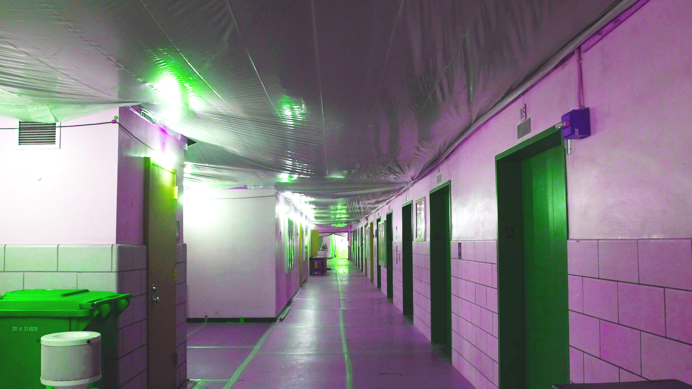

This is the second image I chose. I played around with a couple of the same layers as image 1. I decided to give it a bit of an alien vibe with the green through the saturation and the darkness of the photo through exposure. It was interesting to change the levels around as well since it helped to darken it a little more making it seem like an abandoned science lab. It was also pretty fun that the walls ended up becoming purple-ish pink which I really like.
